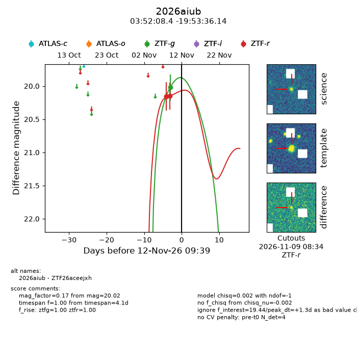
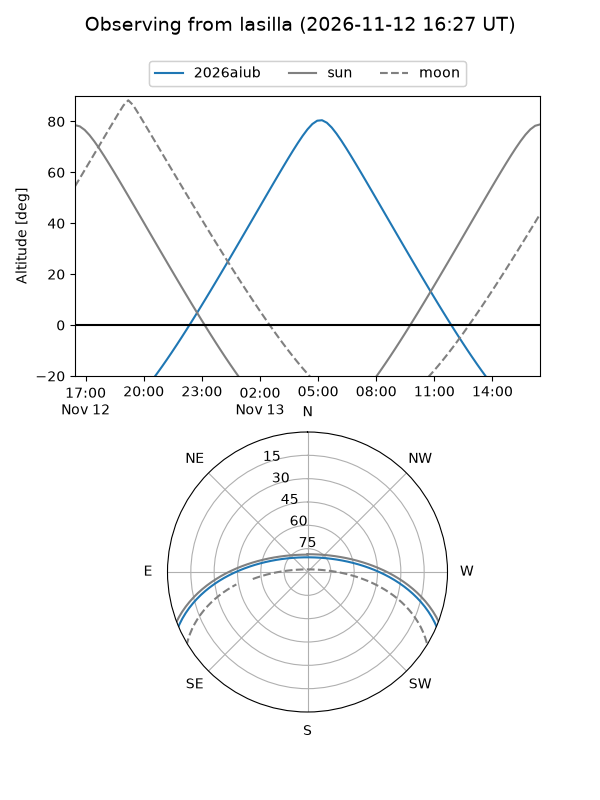
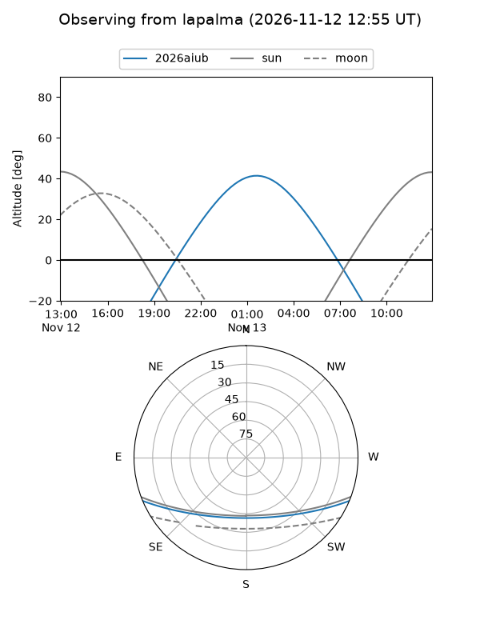
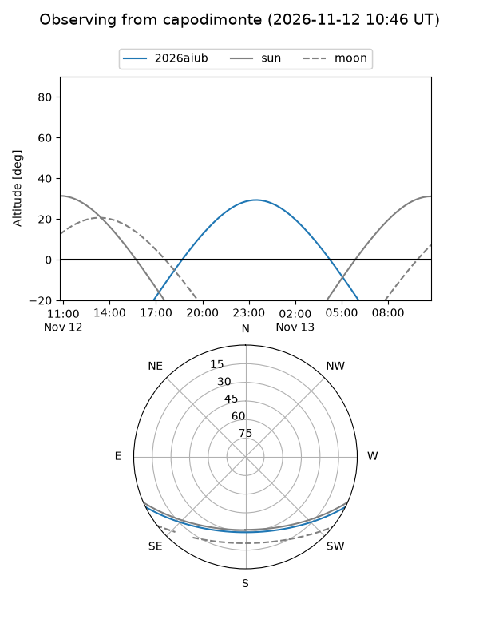
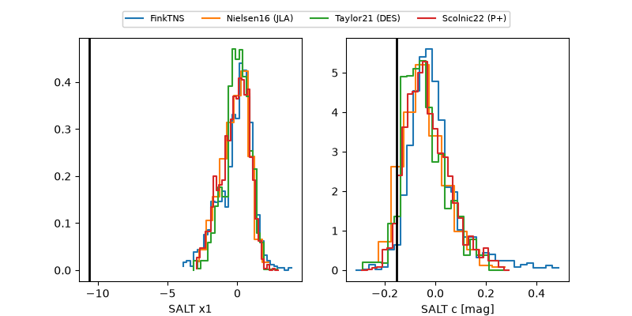

2026aiub
Target 2026aiub at 2026-11-12 09:45
Aliases and brokers:
FINK-ZTF: ztf.fink-portal.org/ZTF26aceejxh
Lasair-ZTF: lasair-ztf.lsst.ac.uk/objects/ZTF26aceejxh
ALeRCE-ZTF: alerce.online/object/ZTF26aceejxh
YSE-PZ: ziggy.ucolick.org/yse/transient_detail/2026aiub
TNS name: wis-tns.org/object/2026aiub
Direct TNS query: direct search
alt names
ZTF26aceejxh (ztf,fink_ztf)
2026aiub (tns,yse)
Coordinates:
equatorial (ra, dec) = 58.0351,-19.89337
equatorial (HMS+DMS) = 03:52:08.43,-19:53:36.14
galactic (l, b) = (212.9816,-48.16811)
Flags:
peak dt: +1.3
Photometry:
last ztfg=20.02, ztfr=20.15
2 ztfg, 2 ztfr detections
Lightcurve

Visibility



Additional plots
